One agent, one memory
Windows, channels, scheduled runs and peer messages are threads of one agent with one append-only, hash-chained log and one summary tree. /new starts a thread, not a blank mind.
Project Exo / Aska Digital / In active build
Exo is one system for working well with models. It keeps a signed record of your work, builds a model of you from it, remembers what matters, learns your taste and grows with you. Built to fit one person deeply. Built to work for anyone.
01 / Working today
Exo runs now, in a terminal and in a local browser, on the same core and the same memory. This is what is built and in daily use. The delivery order is core verification, browser polish, then Electron desktop packaging. See the next steps and their exit criteria.

One agent, one memory
Windows, channels, scheduled runs and peer messages are threads of one agent with one append-only, hash-chained log and one summary tree. /new starts a thread, not a blank mind.
A harness that watches itself
Every model call records the route that served it, timing and cost. Anomaly rules turn that trace into findings. A finding marked fixed is measured again and reopens if it comes back.
Approvals tied to the exact text
For anything that posts, sends or pays, the gate hashes the exact text, target and arguments. Edit one character and it asks again. Seats sign their answers. Standing grants belong to the principal and expire.
Background jobs
A long build or test run does not hold the turn. It runs as a job that belongs to the agent. When it ends, the agent gets a notice in the thread that started it.
Peers
Sessions can message each other through one ingress path with a trust policy. A peer message is input, never consent, and it never looks like you.
Cost per turn
Timing and estimated cost for each turn and each call. A call Exo cannot price reads unknown, never zero.
 Terminal client →Textual, no build step, draws the site's language in the terminal.
Terminal client →Textual, no build step, draws the site's language in the terminal.
 Web app →Plain JavaScript on the same protocol, with a memory column.
Web app →Plain JavaScript on the same protocol, with a memory column.
These are historical screenshots rendered from fixture-backed scripted sessions. They may not show current shortcuts or default layout.
02 / The problem
They forget
A new session starts from zero. Your context lives in one vendor's chat history, or nowhere at all.
They do not learn
You correct the same mistake again and again. The fix lives in one session and dies with it.
They eat your attention
Approve this, confirm that. People cannot watch quiet systems all day, so endless approval queues fail.
Everything is split
Agents, memory, sessions, dashboards and notes are separate tools. None of them shares what it knows.
What stops people from handing real work to models is missing context, not missing intelligence. Exo exists to close that gap.
03 / Vision
A tailor does not make you a suit from a size chart. They measure you, cut, fit, and adjust over the years as you change. Exo does the same for models. It measures you through your own record of work, fits every model to you, and keeps adjusting. Today that work is spread across five kinds of tool. Exo puts them in one system, so each part can use what the others know.
A picture of how you think, decide and write, built from a signed record of your work and words. Every model you use reads it first. When it is unsure what you would want, it asks.
The code around a model that lets it act. Exo's harness runs agents (models that use tools to do work), an orchestrator that splits a job and hands out the parts, and routing that sends each part to a cloud or local model.
A continuing relationship across sessions, platforms and agents. Every belief Exo holds about you can answer the question: why do you believe this?
Gives the model the right material for each step, and no more. Keeps long sessions sharp, lets you branch a session to try another path, and hands work cleanly to the next session.
One view of every project, every running agent and task, and every decision waiting on you.
Goal one
A system like this is only worth having if it really knows you. Exo learns your rulings, your voice, your taste and your limits, and keeps learning.
Goal two
The core is generic. Everything about a person lives in their own store, built by an onboarding interview. A fresh install with an empty store runs end to end.
Every part of Exo splits the mechanism, which ships to everyone, from the person, which lives only in their own store. Nothing in the core may assume one user's accounts, machines or names.
04 / Horizon
In a few years, Exo should live in a small portable device, something like a mini robot or a charm you wear, that grows and evolves with its user. We design for that now: the personal store is one portable folder, the core stays lean on purpose, and there is a small, local model path from day one.
05 / How it works
Read the stack from the bottom up. The ledger is a record of every event that can grow but never be edited. Your store holds what Exo has worked out about you from that record. Its promotion rules include a held-out evaluation path for selected changes.
The core does the work: it talks to models, runs tools and keeps sessions. At the top, every screen you use talks to the core in one shared format, called the protocol.
01
If a system's memory of you is a file it keeps rewriting, you cannot tell what changed, who changed it, or rebuild it later.
Think of a bank statement. Your balance is worked out from a list of transactions that is never erased. A mistake is fixed with a new entry, not by rubbing out an old one.
Exo's ledger works the same way. Every event is added to the end: what you said, what you ruled, what agents did, and whether you accepted, edited or rejected it. Each entry carries a digital signature (Ed25519), a mark only its author's private key can make, so anyone can check who wrote it.
Each entry also holds a hash of the one before: a short fingerprint that changes completely if one character changes. Edit an old entry and every fingerprint after it stops matching.
Your profile, memory and skills are worked out from the ledger, like the balance. When a better model arrives, it reads the ledger from the start and catches up.
02
What Exo knows about you should belong to you, move with you, and be quick to search.
So it lives in one folder you can copy: a one-page summary called the pack, an index called the router that says where each kind of knowledge lives, beliefs (claims about you, each with its evidence and how sure Exo is), imported items such as notes and bookmarks, and the ledger itself.
Search currently uses keyword retrieval to find matching notes. Embedding search, which can find related meaning even when words differ, and link-following are designed next steps, not built features.
The current search stops at a token budget. A token is a piece of a word, and the budget caps how much text the model is handed. No embedding model is currently run by Exo.
03
A model can read only so much at once. This limit is its context window. Give it too little and it forgets you. Give it everything and it gets slow, costly and confused.
An office solves the same problem with a desk, a filing cabinet and an archive. What you use every minute sits on the desk. What you need now and then is in the cabinet. The full record is in the archive. Exo keeps four tiers, and each one is rebuilt from the one below it.
04
Most chat tools send the whole conversation to the model every time you write. It grows until early details get lost, and old mistakes keep coming back.
Picture joining a long project. You do not reread every word of every meeting. You read the minutes, then listen closely to the last few minutes of talk.
Exo does that. Each turn, one message from you and one reply, is a new call to the model. Exo builds it from a summary tree: small groups of messages are summarised, then groups of summaries are summarised, like chapters under a table of contents.
The latest messages go in word for word. The turn waits until the summaries are up to date, so nothing falls into a gap. Summaries are written in parallel, with live chat ahead of imported history.
05
Ask for approval on every step and people stop reading and approve everything. Ask for none and one bad step can cost a lot.
A family can let anyone move the furniture but need two signatures to sell the house. What matters is not the size of the step. It is whether it can be undone, and who else it reaches.
A gate is a check that runs before an action, and Exo's gates ask those two questions.
Private steps that can be undone run at once and are logged. Steps that cannot be undone, or that are public, involve money or reach other people, wait for your answer, with a link and a suggested reply. Every outside action is tied to a named person. Rules that protect other people sit outside the model of you, so learning your taste can never argue Exo out of them.
06
Many choices in a session are small: which tool, which model, which label, whether to open a panel. Asking a large model each time is slow and costly, and it answers in prose that then has to be read.
A firm does not ask a senior partner which folder a letter goes in.
Decision models are intended for choices with fixed options, such as which tool or panel fits a turn. A model scores the options, for example "tool A 0.82, tool B 0.11". The numbers estimate confidence; Exo can use them to choose or ask when confidence is low.
Today the gate uses the decision role to tighten its rule-based outcome, never to loosen it. The router tries TypeSafe Jev first when configured, then local Laya, before falling through to other routes. You can also call exo decide or use a decision model as an optional export judge. Tool, model and panel selection through decision models remains a design direction.
07
Most assistants are tied to one app. Move to a phone or a new screen and you start again.
Email solved this long ago. One mail server holds your inbox, and any mail app shows the same inbox, because they all speak the same standard.
Exo's core, exod, is a small Python program that does the real work. It runs each turn, picks which model should answer (the model router), calls tools and keeps sessions.
The terminal and the web are clients today. Desktop, chat channels and a device are planned. Clients are screens that talk to the core through one protocol. Everything that happens is sent as an event with a fixed shape and a number in sequence. A client that drops off asks for every event since the last number it saw, so nothing is lost. A cap on lines of code, checked by tests, keeps the core small enough to fit on a device.
08
Writing everything from scratch wastes years. Forking a large project, which means copying it and changing the copy, brings all its weight and slowly drifts away from the original.
Exo is its own harness. It lifts a small set of proven modules from Hermes Agent (MIT licence) and writes the rest small. Every lifted file carries a header and a row in a provenance file, which records where it came from and the exact version.
The exo upstream commands can compare those files with the original project and report possible changes for review. A weekly comparison job is not set up; good changes flow in by choice rather than by dependency.
This page is the overview. The whitepaper covers each part in depth, with the reasoning and the trade-offs.
06 / The learning loop
Many assistants that "learn" save notes and hope they help. But a lesson can make things worse. "Keep it short" may improve your emails and ruin your contracts. Exo has explicit promotion rules, including a held-out evaluation path for selected changes; other paths use principal rulings or repeated, high-confidence evidence.
Corrections, edits, accepts, rejections, direct requests and outcomes are written to the ledger. A correction teaches the most, because it shows exactly where Exo was wrong.
A reviewer works in the background, apart from your conversation, and turns those events into proposed lessons, each with its evidence and confidence. It only proposes. It never changes anything in silence.
This is hill climbing. Imagine finding the top of a hill in fog: take one step, check whether you went up, and keep the step only if you did. Each proposal becomes a candidate, the current setup with one change, and is scored on a test built from your past decisions.
Some proposed changes go through held-out and regression gates before promotion. Other paths use explicit principal rulings or repeated, high-confidence evidence. Remaining proposals are held, become a question, or expire under the promotion policy.
Learned taste appears in the chat, linked to a plain file you can edit. Undoing a lesson adds a new entry and deletes nothing, so every lesson can be traced.
A test with one subject: you
Most AI tests score a model on public question sets that everyone shares. Exo's test has one subject, measured over time. Statisticians call this n=1, a sample of one. The question is: does Exo predict and please you better than it did last week?
What it is scored on
Questions about you with known answers. Pairs of what you rejected and what you chose instead. Replays of real past turns, stopped right before your verdict, so Exo has to predict it. Cases are sorted by date and the newest are held back, the way a fair exam uses questions the student has not seen.
How it is scored
Your hard rules become exact checks, and breaking one is a fail. A separate judge model, a second model asked to compare answers, grades the rest. It grades many samples, because one run can be luck, and it checks the stance and the conclusion as well as the voice.
07 / One surface
Text is the fastest way to ask for work, but it is a poor way to review a change to a file or read a chart. Apps are good at those and slow at everything else. Most tools make you pick one, or ship a command-line tool and a separate app.
Exo ships one surface. The base is a calm prompt and transcript, like a terminal. Three prefixes and one palette get you started: / runs a command, @ attaches a file or note, ! runs a system command, and ctrl+p opens a searchable list of every action.
Richer views are panels the model opens when they help: a diff viewer that shows what changed line by line, a task board, an approval card, a taste card, a chart. Each client shows what it can. The web client shows full panels and the terminal shows a compact form. A planned device client could show a card or speak.
You can always open or close a panel yourself. Exo records those responses as ledger events; the learning loop does not yet consume them as lessons.
› draft the release note for the store migration @docs/STORE-V2.md
reading 1 file · summary tree current
Draft ready. Short sentences, result first, no long dashes.
TASTE · learned
Lead with the result, then the detail.
kept after test · 2 sessions · edit file
APPROVAL · public, irreversible
Post release note to the project channel?
o once d deny
›
08 / Principles
Exo has eighteen principles, drawn from wide reading on personal software, human attention and automation. These nine carry the most weight.
Everything else is a view that can be rebuilt when a model or format changes.
You decide what is worth doing. Agents decide how, inside your goals.
The aim is not zero interruptions. It is zero wasted interruptions.
And measure how unsure it is, instead of guessing.
A correction enters the signed record. Inferred lessons go through review and evaluation before they shape future behavior. You can inspect and undo accepted lessons.
Text Exo reads is material to work on, never an order to follow. Instructions come only from you, never from an email, a web page or a tool's output.
Not by step count. Fast where mistakes are cheap, careful where they are not.
Predict your next decision before you make it, and score the prediction.
The value is in your record, your store and the harness. The model is a part you can change.
09 / Status and roadmap
Exo is early, and it is not a product with a release yet. It is built in waves, each with a clear exit test. Waves 1 to 3 are built and one agent uses them every day. Wave 4 is next, and wave 5 is planned. This page will change as the work does.
Built: the core and the plugins on it
exod server with a replayable event stream, and a line clientBuilt: clients and learning
Wave 1 · Built
Turn loop, model providers, tools, sessions, plugin slots, protocol server, provenance.
Wave 2 · Built
Memory, context, gates, command centre and agent messaging on the new core. Skills, and MCP, a standard way to plug in outside tools.
Wave 3 · Built
Terminal and web clients, panels the model opens, and policy-based learning with held-out evaluation for selected changes. In daily use on one canary agent.
Wave 4 · Next
Chat channel adapters, history import, and existing agents moving over, each with a way back.
Wave 5 · Planned
Size audit, small local models by default, the core on a small board, a thin device client.
10 / Credits and inspirations
An essay, and the pages it links to, that helped shape our early thinking about personal models.
MIT. Exo lifts parts of it, with credit and provenance: slot interfaces, message types, tool logic. Its review loop shaped Exo's learning loop.
The model for a simple surface: a client and server split, a few prefixes and one menu.
Taste learning shown in the chat, with a file you can edit. A calm, quiet feed.
The word-for-word log and summary tree, and a fresh call every turn. Exo reimplements the ideas, not the code.
A hosted model for small, typed decisions. It is Exo's first configured decision route when credentials are available.
Open-weight, Apache 2.0, runs locally. Exo's configured fallback decision model.
A planned local embedding model; Exo does not yet run embedding search.
Strong memory design ideas: memory blocks, memory kept in version control, and tidying memory while idle.
Why approve-every-step flows fail, and why Exo budgets your attention.
Learning from corrections made on the agent's own output, in the exact state it was in.
Apache 2.0. A planned alternative embedding model; Exo does not yet run embedding search.
And many more
The background reading covered dozens of essays and papers. Every source, with its link and how it applies to Exo, is listed in the research notes in the repository.
The whitepaper explains how each part works and why. The repository holds every decision, with the reason for it and what was rejected. Access to the repository is limited during the early build.